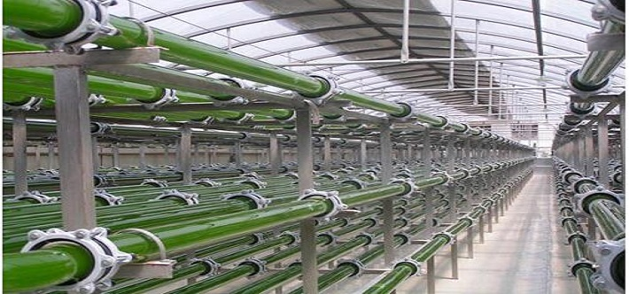

节水种植灌溉
中国现有常用节水灌溉方法包括渠道防渗、喷灌、微喷灌、渗灌和滴灌等，均为人为控制灌溉时机和灌水量，属于“被动式”灌溉模式。以色列滴灌技术被公认为目前效果最好的节水灌溉技术，中国自上世纪70年代末引进以来，取得了长足发展。但是滴灌灌水器为了实现更小流量的灌水以及长距离铺设，就必须不断地减小流道尺寸，由此带来了流道易堵塞及制造难的问题

【微喷】微喷是新发展起来的一种微型喷灌形式。这是利用塑料管道输水，通过微喷头喷洒进行局部灌溉的。它比一般喷灌更省水，可增产30%以上， 能改善田间小气候，可结合施用化肥，提高肥效。国产设备亩投资一般在500元-800元。主要应用于果树、经济作物、花卉、草坪、温室大棚等灌溉 【覆膜灌】用地膜覆盖田间的垄沟底部，引入的灌溉水从地膜上面流过，并通过膜上小孔渗入作物根部附近的土壤中进行灌溉，这种方法称作膜上灌，在新疆等地已大面积推广。采用膜上灌，深层渗漏和蒸发损失少，节水显著，在地膜栽培的基础上不需再增加材料费用，并能起到对土壤增温和保墒作用。在干旱地区可将滴灌管放在膜下，或利用毛管通过膜上小孔进行灌溉，这称作膜下灌。这种灌溉方式既具有滴灌的优点，又具有地膜覆盖的优点，节水增产效果更好。